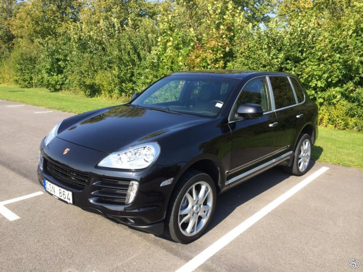

Porsche Cayenne S 4.8 -08
Porsche Cayenne V8 i mycket fint skick! Besiktigad till 2015-06-30 Skattad till 2014-12-31 11900 mil, bilen är nyservad (Stor Service) komplett ifylld servicebok alltid servad på märkesverkstad. Utrustad med: 6-steg Automat, AWD, Skinnklädsel, ACC/Klimatanläggning, GPS/Navi, Luftfjädring, ABS bromsar, Xenonsljus, Kurvljus, Airbag, Antisladdsystem, Antispinn, El-hissar fram och bak, El-stolar, Farthållare, Fjärrstyrt c-lås med larm, Färddator, Regnsensor, Yttertemperaturmätare, Parkeringssensor fram och bak, Automatisk avbländande backspeglar, Multifunktionsratt, CD-växlare, Lack-behandlad och lack-förseglad, Restvärmesfunktion, Insynsskydd, M+S däck. Finans kan ordnas via extern bilhandlare mot tillägg. Blockets begagnatförsäkring kan läggas till vid intresse. Pris: 189.000 kr Fast pris! Ev. Byte, krav: max 100.000 kr, Automat, Inga fantasi priser! Bytespris 200.000 kr
| Maker | Model | Year | Fuel | Windows | Airbags | Price |
| Porsche | Cayenne V8 | 2008 | Water mixture | See through version | 27 airbags | 199 k |

